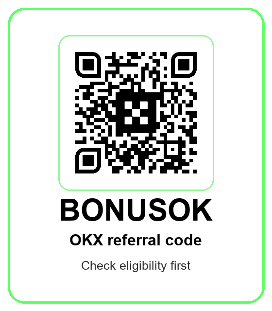

إفصاح ومخاطر: هذا محتوى إحالة وتعليمي. قد نحصل على عمولة إذا استخدمت BONUSOK. تداول الأصول الرقمية والعقود والمنتجات ذات الرافعة عالي المخاطر وقد يؤدي إلى خسارة كبيرة. تحقق من الأهلية والقوانين المحلية ولا تستخدم أي خدمة غير متاحة رسميا في بلدك.
ما هو كود إحالة OKX BONUSOK؟
هذه الصفحة موجهة إلى المتداول العربي الذي يبحث عن كود إحالة OKX أو كود دعوة OKX أو كود بونص OKX أو OKX referral code ويريد أكثر من رابط سريع. الكود الذي نستخدمه هنا هو BONUSOK، والرابط الرسمي هو https://www.okx.com/join/BONUSOK. الهدف ليس إقناع أي شخص بفتح حساب فقط لأن هناك مكافأة محتملة، بل تقديم دليل عملي يساعدك على فحص الأهلية، التحقق من الهوية KYC، القيود الإقليمية، مركز الحملات، أدوات التداول الجديدة، ورسوم التداول قبل أي إيداع أو صفقة.
الكثير من صفحات الإحالات تكرر عبارة واحدة: استخدم الكود واحصل على بونص. هذا لا يكفي للمتداول النشط في مصر أو العراق أو اليمن أو أي بلد عربي آخر. المتداول الذي يصنع حجم تداول حقيقي يهتم بالسيولة، عمق دفتر الأوامر، سرعة التنفيذ، رسوم maker وtaker، تمويل العقود الدائمة، أدوات Web3، حماية الحساب، إمكانات API، وأدوات الذكاء الاصطناعي التي قد تدخل في سير عمله. لذلك تجمع هذه الصفحة بين نية البحث عن كود إحالة OKX BONUSOK وبين شرح مخاطر استخدام العقود الدائمة وX-Perps وAgent Trade Kit وXAU Event Contract.
تعامل مع هذه الصفحة كقائمة فحص قبل التسجيل. إذا كنت تريد تجربة تداول فوري صغيرة، فالأهم هو التأكد من النطاق الرسمي، ظهور الكود أو المكافأة داخل الحساب، حماية الحساب، وتوفر الخدمة في بلد إقامتك. إذا كنت متداولا نشطا في العقود أو تستخدم أدوات آلية، فالأهم هو حجم المخاطرة، الرافعة، صلاحيات API، الانزلاق السعري، التمويل، وقف الخسارة، وكيفية اختبار أي أداة قبل تكبير رأس المال. كود BONUSOK هو نقطة دخول، وليس بديلا عن إدارة المخاطر.
مهم لمصر واليمن والعراق وباقي الدول العربية: الأهلية أولا
لا تفترض أن كل منتج من OKX متاح لكل مستخدم عربي. بحسب إفصاح المخاطر والامتثال الرسمي من OKX، قد لا تتوفر جميع الخدمات في كل الأسواق والولايات القضائية، وقد تقيد المنصة أو تمنع استخدام بعض الخدمات من مواقع معينة. كما أن بعض المنتجات يمكن أن تكون مقيدة حسب بلد الإقامة أو حالة التحقق أو نوع الحساب. لذلك يجب أن تبدأ دائما من سؤال بسيط: هل OKX والخدمة التي أريدها متاحة رسميا لحسابي وبلدي ومستوى KYC الخاص بي؟
هذا التحذير مهم جدا لمصر واليمن والعراق لأن البيئة التنظيمية في المنطقة قد تكون مختلفة من بلد إلى آخر، وقد تتغير بسرعة. لا تستخدم VPN أو عنوانا غير صحيحا أو وثائق شخص آخر أو بلد إقامة غير حقيقي فقط من أجل الحصول على بونص أو فتح منتج غير متاح. هذا قد يخالف شروط المنصة ويعرض الحساب للتجميد أو صعوبة السحب أو فقدان الوصول إلى الدعم. الطريق الأفضل للمتداول طويل الأجل هو حساب نظيف، بيانات صحيحة، وفهم واضح لما هو مسموح به محليا.
فرق بين ثلاثة أشياء: قواعد OKX، القوانين المحلية، وقرارك الشخصي بشأن المخاطر. قواعد OKX تحدد ما يظهر داخل حسابك. القوانين المحلية قد تؤثر على الضرائب، التعامل البنكي، الإفصاح، أو القيود على الأصول الرقمية. قرارك الشخصي يحدد هل تستطيع تحمل تقلبات السوق أو خسارة جزء من رأس المال أو أخطاء التحويل أو مخاطر الرافعة. هذه الصفحة ليست نصيحة قانونية أو ضريبية أو استثمارية، لكنها تذكير بأن البحث عن OKX bonus code يجب أن يبدأ بفحص الأهلية لا بالضغط على زر الإيداع.
آخر تحديثات OKX التي تهم المتداول النشط في يونيو 2026
حتى 24 يونيو 2026 تعرض صفحة الإعلانات الرسمية من OKX سلسلة تحديثات جديدة في القوائم والأسواق. من بينها قوائم مرتبطة بعقود دائمة على أسهم أو أدوات تشبه الأسهم مثل ZHIPU وMINIMAX وUVXY وKORU وSONY وSMCI، إضافة إلى ARXUSD وUBUSD Expiry Perps أو X-Perps، وتحديثات Equity X-Perps في 23 يونيو، وقوائم أخرى مثل KLAC وLRCX وTTMI وARX وREUSD وOUSD وSMH وEWZ وRIVN وDKNG وRDDT. هذه ليست مجرد أسماء؛ هي إشارة إلى أن المنصة توسع مساحة المنتجات المتاحة للمتداول النشط.
لماذا يهم ذلك في مادة إحالة؟ لأن المستخدم القوي لا يبحث فقط عن كود دعوة. هو يريد معرفة هل البورصة تضيف أسواقا جديدة، هل لديها أدوات تناسب تداول الأخبار والماكرو والأسهم المشهورة والذهب والكريبتو، وهل تقدم واجهات يمكن دمجها مع الروتين اليومي. لكن هذه النقطة يجب أن تعرض بحذر: العقود الدائمة ليست امتلاكا للسهم الأساسي، وX-Perps ليست استثمارا بسيطا، والرافعة يمكن أن تضخم الخسارة كما تضخم الربح النظري.
الزاوية الأفضل لجذب الإحالات من هذه التحديثات هي زاوية التعليم العملي. يمكن أن يأتي القارئ من بحث مثل OKX referral code أو كود إحالة OKX، ثم يجد شرحا لكيفية فحص السوق والرسوم والمخاطر قبل استخدام الكود. هذا يرفع جودة الزيارات لأن الصفحة لا تستهدف من يريد مكافأة مجانية فقط، بل تستهدف متداولا يعرف أن المنتجات الجديدة جذابة لكنها تحتاج قواعد واضحة، مثل حجم صفقة محدود، وقف خسارة، فهم التمويل، ومراجعة إعلان المنتج الرسمي قبل فتح مركز.
Agent Trade Kit: سبب قوي للاهتمام، لكنه ليس آلة ربح
من أبرز الزوايا الحديثة التي يمكن أن تجذب متداولين نشطين إلى OKX هي Agent Trade Kit. في الأسئلة الشائعة الرسمية، تصف OKX هذه الأداة بأنها تتيح للذكاء الاصطناعي الاتصال بمنصة OKX للوصول إلى بيانات السوق في الوقت الحقيقي وتنفيذ صفقات. تذكر OKX أن الأداة يمكن أن تدعم التداول الفوري والعقود والهامش والخيارات، إعداد استراتيجيات مثل Grid وDCA، أوامر algo، إدارة منتجات Earn، وتحليل السوق من خلال K-line وfunding rates وعمق دفتر الأوامر ومعلومات المراكز وPnL.
هذا جذاب جدا للمتداول العربي الذي يستخدم دفتر تداول، روبوتات، API، أو أدوات بحث آلية. لكنه ليس وعدا بالربح. توضح OKX أن Agent Trade Kit لا يضمن العوائد، وأن أفعال الذكاء الاصطناعي قد تفتح صفقات حقيقية وتسبب خسائر بسبب أخطاء النماذج، الهلوسة، معلومات قديمة، تأخر التنفيذ، تقلب السوق، الانزلاق، ضعف السيولة، أخطاء الإعدادات، أو أعطال الخدمة. لذلك يجب التعامل معه كأداة تنفيذ وتحليل تحت إشرافك، لا كمدير أموال مستقل.
إذا قررت تجربة هذه الزاوية بعد التسجيل بكود BONUSOK، استخدم قاعدة الصلاحيات الأقل. لا تمنح صلاحية السحب إلا إذا كان هناك سبب ضروري ونادر. اربط API بعناوين IP موثوقة عندما يكون ذلك ممكنا. اختبر بمبلغ صغير. راقب الأوامر الأولى يدويا. اكتب قواعد استراتيجية واضحة قبل تشغيل أي أمر آلي: متى تدخل، متى تلغي الفكرة، كم تخسر في الصفقة الواحدة، وماذا يحدث إذا توقف الاتصال. بهذه الطريقة يصبح Agent Trade Kit نقطة جذب للمتداول الجاد لا فخا لمن يطارد الربح السريع.
XAU Event Contract: الذهب زاوية مفهومة عربيا، لكن المنتج مختلف
أعلنت OKX عن XAU أو Gold Event Contract في 15 يونيو 2026 مع إطلاق في 16 يونيو 2026 حسب UTC+8. المنتج يستخدم مؤشر XAU-USDT كمرجع للتسوية ويتابع حركة الذهب، مع أدوات مثل XAU Daily Up/Down وXAU Daily Price Above. بالنسبة للجمهور العربي، الذهب موضوع قريب من الثقافة المالية اليومية في مصر والعراق واليمن والخليج وشمال أفريقيا؛ كثيرون يفهمون الذهب كحفظ قيمة أو أصل مرتبط بالدولار والتضخم وأسعار الفائدة.
لكن event contract ليس شراء ذهب مادي وليس صندوقا متداولا وليس استثمارا طويلا في المعدن. هو منتج تداول قائم على نتيجة محددة وقواعد تسوية وتوقيت مرجعي ومؤشر. يجب أن تفهم وقت التسوية، كيفية احتساب السعر، العطلات أو الأيام غير المتداولة، وماذا يحدث إذا تعطل السوق المرجعي أو حدث إغلاق مبكر. إذا دخلت المنتج لأنك رأيت كلمة ذهب فقط، فقد تكون في الحقيقة تتداول نتيجة قصيرة الأجل لا تناسب هدفك.
من منظور الإحالة، هذه زاوية ممتازة لأنها تجذب متداولين مهتمين بالماكرو والذهب والدولار، لكنها تحتاج لغة مسؤولة. المقال لا يقول إن XAU مناسب للجميع. المقال يقول: إذا كان المنتج متاحا لك رسميا وفهمت قواعده، يمكنك دراسته داخل OKX، أما إذا لم تفهم التسوية والمخاطر فلا تبدأ منه. كود BONUSOK لا يغير طبيعة المخاطرة؛ هو فقط طريقة تسجيل يجب أن تأتي بعد فهم المنتج.
قائمة فحص قبل استخدام كود BONUSOK
الخطوة الأولى هي النطاق الرسمي. يجب أن يكون رابط الإحالة على okx.com وأن يكون الشكل الأساسي https://www.okx.com/join/BONUSOK. تجنب الروابط القصيرة غير الموثوقة، النطاقات المشابهة، الصفحات التي تقلد الموقع الرسمي، أو الحسابات التي تدعي أنها OKX دون تحقق. إذا أردت متابعة المصدر، افتح الرابط الرسمي بنفسك وافحص العنوان قبل إدخال بياناتك.
الخطوة الثانية هي ظهور الكود أو المكافأة داخل الحساب قبل أي إيداع كبير. بعد التسجيل، افتح Campaign Center أو My Rewards أو قسم المكافآت المتاح في بلدك. إذا لم يظهر BONUSOK أو لم تظهر مهام المكافأة، لا تفترض أن البونص مضمون. قد تعتمد المكافأة على البلد، KYC، نوع الحساب، إيداع معين، حجم تداول، فترة زمنية، أو شروط حملة محددة. عبارة حتى 1000 دولار أو mystery prize لا تعني أن كل مستخدم سيحصل على هذا الرقم.
الخطوة الثالثة هي حماية الحساب. فعل المصادقة الثنائية، رمز مكافحة التصيد، إدارة الأجهزة، قائمة السحب البيضاء إذا كانت متاحة، واستخدم مدير كلمات مرور. لا تضع رأس مال كبيرا قبل تجربة تحويل صغيرة وفهم الشبكة والرسوم وmemo أو tag إن وجد. كثير من الخسائر الأولى في الكريبتو لا تأتي من السوق، بل من شبكة خاطئة أو عنوان خاطئ أو صفحة تصيد أو seed phrase مكشوفة أو توقيع معاملة غير مفهوم في Web3 wallet.
الخطوة الرابعة هي تحديد المنتجات. إذا كنت جديدا، ابدأ من spot وأوامر limit وmarket فقط. إذا أردت futures أو perpetual، اكتب قواعد واضحة للرافعة، الحد الأقصى للخسارة اليومية، الخسارة لكل صفقة، وقف الخسارة، وحجم المركز. إذا استخدمت Agent Trade Kit، امنح أقل صلاحيات ممكنة. إذا جربت X-Perps أو XAU، اقرأ المواصفات الرسمية ولا تتداول فقط بسبب عنوان الخبر.
الخطوة الخامسة هي الرسوم. صفحة الإحالة عادة تتحدث عن المكافأة، لكن المتداول النشط يعيش أو يخسر على الرسوم والانزلاق. اقرأ maker fee وtaker fee وfunding fee وwithdrawal fee ورسوم التحويل والفروق السعرية. إذا كنت تتداول كثيرا، الفرق الصغير يتراكم. الكود قد يساعد في بداية الحساب، لكن التفوق الحقيقي يأتي من ضبط التكلفة، اختيار الصفقات، وعدم الإفراط في التداول.
كيف تقرأ مكافأة OKX دون مبالغة
في قاعدة البيانات الداخلية لدينا، العرض المرتبط بـ OKX وBONUSOK يذكر mystery prize up to $1,000، لكننا لا ننشره كضمان. الأصح للقارئ العربي هو أن يفهم كلمة up to باعتبارها سقفا محتملا لا نتيجة ثابتة. قد تختلف المكافآت حسب البلد والحملة والمستوى والمهام وتاريخ التسجيل. لذلك يجب أن تعتمد على ما يظهر داخل حسابك الرسمي في وقت التسجيل، لا على لقطة قديمة أو منشور اجتماعي أو مقال طرف ثالث.
إذا كان هدفك الأساسي هو المكافأة فقط، فربما تكون أفضل خطوة هي التوقف. المكافأة قد تكون صغيرة أو غير متاحة أو مشروطة بحجم تداول لا يناسبك. أما إذا كنت تحتاج فعلا إلى منصة تداول جديدة أو تريد مقارنة أدوات OKX مع منصتك الحالية، فيمكن أن يكون BONUSOK إضافة جيدة أثناء التسجيل. الفرق مهم: لا تجعل البونص سببا للتداول، بل اجعله جزءا من onboarding إذا كان قرار المنصة منطقيا بالفعل.
لذلك وضعت الصفحة عبارات بحث مثل كود إحالة OKX، كود دعوة OKX، كود بونص OKX، OKX referral code، OKX bonus code، BONUSOK، Agent Trade Kit، X-Perps، XAU، Web3 Wallet، KYC، وCampaign Center داخل سياق مفيد. الهدف أن يجد المستخدم من محركات البحث إجابة كاملة: كيف يسجل، ماذا يفحص، ما المخاطر، وما المنتجات الجديدة التي تستحق القراءة. هذه النوعية من المحتوى أفضل لجذب إحالات نشطة من صفحة رقيقة لا تقدم سوى زر.
لمن قد تكون OKX مناسبة؟
قد تكون OKX مناسبة لمتداول يفهم أساسيات البورصات المركزية ويريد مقارنة السيولة والأدوات والرسوم وسرعة التنفيذ. قد تكون مناسبة لمن يتابع spot وperpetuals وWeb3 wallet ويريد منصة فيها تحديثات مستمرة وأدوات بحث وتنفيذ. وقد تكون مناسبة لمن يعرف كيف يستخدم API أو يفكر في AI-assisted workflow بشرط أن يضع حدودا صارمة للمخاطرة ويختبر كل شيء بمبالغ صغيرة.
وقد لا تكون مناسبة لمن لا يعرف الفرق بين spot وfutures، أو لا يفهم liquidation، أو لا يستطيع تحمل خسارة رأس مال، أو يريد استخدام قرض أو أموال ضرورية للحياة اليومية. إذا لم تكن تعرف كيف تضع وقف خسارة أو لماذا يحدث funding أو كيف تقرأ دفتر الأوامر، فلا تبدأ من الرافعة. تعلم الأساسيات أولا، جرب حسابا صغيرا، ولا تحول مكافأة محتملة إلى سبب للمخاطرة غير الضرورية.
هذه الصفحة أيضا لا تشجع أي شخص على تجاوز قيود بلد أو منتج. إذا لم تظهر خدمة معينة في حسابك، فغالبا هناك سبب متعلق بالإقامة أو التحقق أو القواعد. المتداول طويل الأجل يحتاج حسابا قابلا للاستخدام والسحب والدعم، وليس حسابا مفتوحا بطريقة ملتوية. لذلك يجب أن يكون الامتثال جزءا من الاستراتيجية، وليس عقبة مؤقتة يتم تجاهلها.
أسئلة شائعة
هل يضمن كود BONUSOK مكافأة؟ لا. قد تعتمد المكافأة على الأهلية، البلد، KYC، الإيداع، حجم التداول، شروط الحملة، وحالة الحساب. افحص Campaign Center أو My Rewards قبل الإيداع الكبير.
هل OKX متاحة لكل مستخدم في مصر أو اليمن أو العراق؟ لا يمكن افتراض ذلك. يجب التحقق من توفر المنصة والمنتجات داخل الحساب الرسمي ومن القوانين المحلية. قد تكون بعض الخدمات غير متاحة أو مقيدة حسب البلد والمنتج.
هل Agent Trade Kit يحقق الربح تلقائيا؟ لا. هو أداة قد تساعد في البحث والتنفيذ، لكنها قد تخطئ وتفتح صفقات حقيقية. استخدم صلاحيات محدودة، IP موثوقا، واختبارا بمبلغ صغير.
هل XAU Event Contract مثل شراء الذهب؟ لا. هو عقد حدث قائم على مؤشر وتسوية، وليس ملكية ذهب مادي أو استثمارا طويل الأجل في المعدن. اقرأ المواصفات الرسمية قبل أي صفقة.
ما أكثر خطوة آمنة بعد الضغط على رابط الإحالة؟ تأكد من نطاق okx.com، افحص ظهور الكود أو المكافأة، فعل حماية الحساب، تحقق من توفر المنتج في بلدك، وابدأ بمبلغ صغير إذا قررت المتابعة.
امسح QR فقط بعد فحص الأهلية
الصورة تستخدم QR الحقيقي المخزن محليا، وتم فك ترميزه بعد دمجه في الصورة النهائية. إذا لم تكن الخدمة أو الحملة متاحة لحسابك، لا تحاول الالتفاف على القيود.
